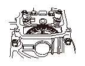
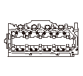
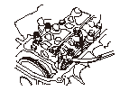
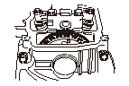
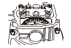
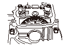

バルブ クリアランスの調整
•
調整は常温（油温10－40°C）で行うこと。
•
調整は各気筒の圧縮上死点（インテーク、エキゾーストともにロッカ アームがリフトされていない）位置で行うこと。
シリンダ ヘッド カバーを取外す。
カムシャフト スプロケットの“UP”マーク（A）を上にして、TDCマーク（B）をヘッド上端面と合わせる。

ロッカ アーム アジャスト スクリュのロックナット（A）をゆるめ、アジャスト スクリュ（B）を回して調整する。
測定はロッカ アームのアジャスト スクリュ面とバルブ ステム エンドの間で行う。
バルブ クリアランス（冷間）
インテーク:
0.15－0.19mm
エキゾースト:
0.26－0.30mm
アジャスト スクリュ位置：

ロックナットを締付け、再度シックネス ゲージ（A）でクリアランスを測定する。
ロックナットの締付けには必ずトルク レンチを使用すること。

クランクシャフトを180°ずつ回転させて各気筒の圧縮上死点に合わせた後、ステップ
3
－4を行う。
シリンダ ヘッド カバーを取付ける。
No.3ピストン圧縮上死点

No.4ピストン圧縮上死点

No.2ピストン圧縮上死点


 測定はロッカ アームのアジャスト スクリュ面とバルブ ステム エンドの間で行う。
測定はロッカ アームのアジャスト スクリュ面とバルブ ステム エンドの間で行う。